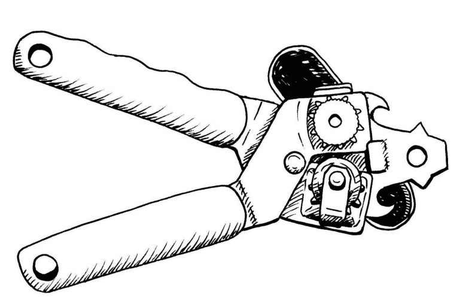
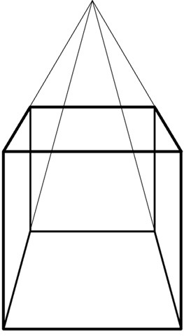

Meganismes tuis





Kies enige drie van die stukke gereedskap wat hier gelys word en evalueer hulle op die volgende bladsye:
- bliksnyer
- eierklitser
- draadstroper
- naelknipper
- leer
- ratchet spanner
- snoeiskêr
- papierpons
- krambinder
- doringtangetjie (Engels: tweezers)
- hamer
- tuinvurk
- tang
- skroewedraaier
Beskryf drie stukke gereedskap wat jy weet mense soms in en om die huis gebruik en wat nie op die lys hierbo is nie.
Naam van gereedskapstuk
Wie sal dit gebruik?
Wat kan jy met die gereedskapstuk doen; wat is die doel daarvan?
Hoe gee dit jou 'n meganiese voordeel?
Van watter materiaal of materiale is dit gemaak?
Waarom is dit van hierdie materiaal gemaak?
Watter ander soorte materiaal kan gebruik word om hierdie gereedskapstuk mee te maak?
Hoeveel dink jy behoort 'n mens daarvoor te betaal?
Wat kan verkeerd gaan terwyl dit gebruik word? Hoe kan dit jou skade aandoen?
Watter veiligheidsmaatreëls behoort jy na te kom wanneer jy hierdie gereedskapstuk gebruik?
Naam van gereedskapstuk
Wie sal dit gebruik?
Wat kan jy met die gereedskapstuk doen; wat is die doel daarvan?
Hoe gee dit jou 'n meganiese voordeel?
Van watter materiaal of materiale is dit gemaak?
Waarom is dit van hierdie materiaal gemaak?
Watter ander soorte materiaal kan gebruik word om hierdie gereedskapstuk mee te maak?
Hoeveel dink jy behoort 'n mens daarvoor te betaal?
Wat kan verkeerd gaan terwyl dit gebruik word? Hoe kan dit jou skade aandoen?
Watter veiligheidsmaatreëls behoort jy na te kom wanneer jy hierdie gereedskapstuk gebruik?
Naam van gereedskapstuk
Wie sal dit gebruik?
Wat kan jy met die gereedskapstuk doen; wat is die doel daarvan?
Hoe gee dit jou 'n meganiese voordeel?
Van watter materiaal of materiale is dit gemaak?
Waarom is dit van hierdie materiaal gemaak?
Watter ander soorte materiaal kan gebruik word om hierdie gereedskapstuk mee te maak?
Hoeveel dink jy behoort 'n mens daarvoor te betaal?
Wat kan verkeerd gaan terwyl dit gebruik word? Hoe kan dit jou skade aandoen?
Watter veiligheidsmaatreëls behoort jy na te kom wanneer jy hierdie gereedskapstuk gebruik?
Die horison is die lyn waar dit lyk asof die aarde se oppervlak en die lug ontmoet.


Teken een aansig van die kubus. Kies 'n verdwynpunt.
Trek ligte lyne van elke hoek van die kubusaansig na die verdwynpunt. Dit is jou konstruksielyne.
Teken horisontale en vertikale lyne vir die agterkant van die kubus. Die konstruksielyne moet aan die hoeke raak.
Teken die vorm van die kubus, die buitelyn, in donkerder lyne.